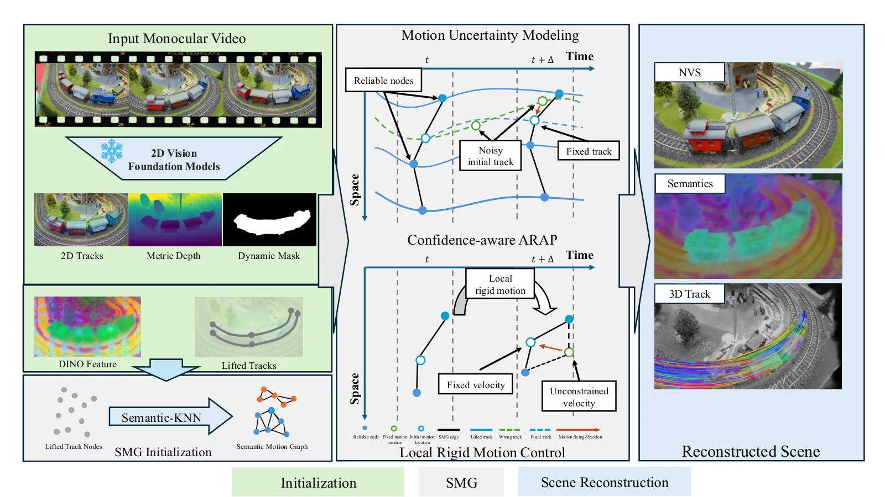
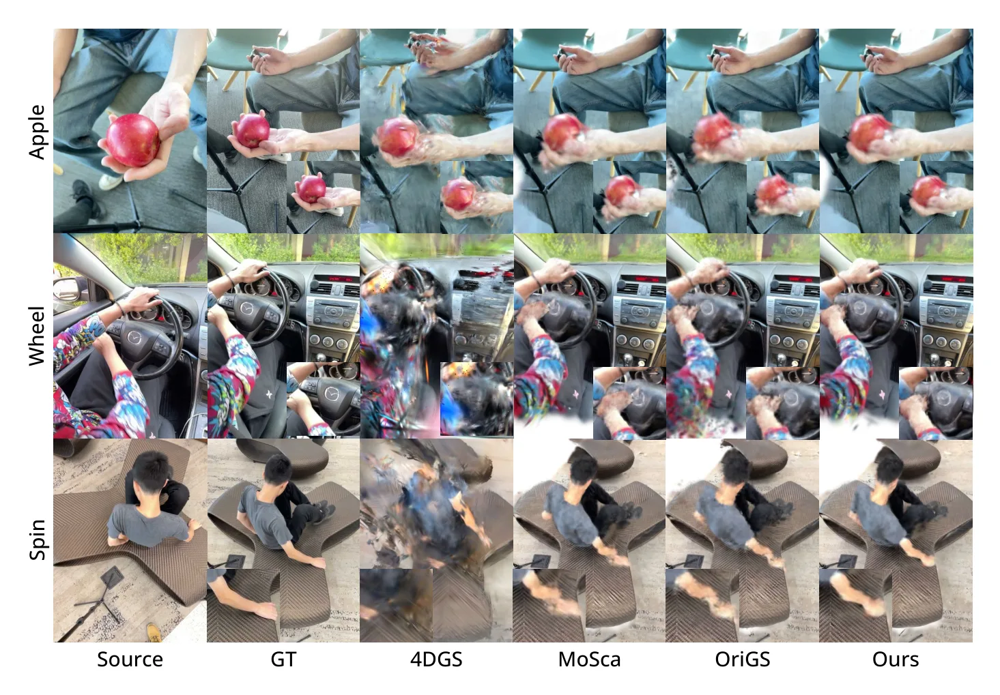
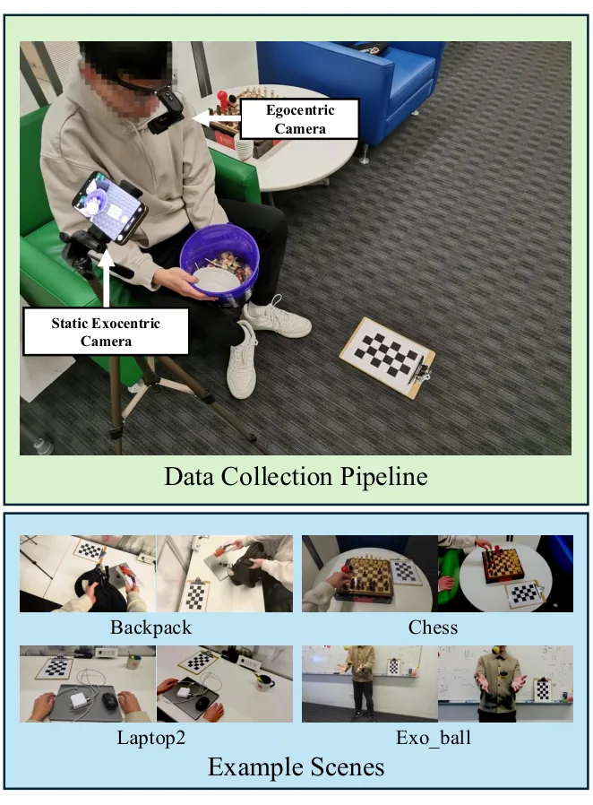

SMG：单目动态 Gaussian Splatting 的语义运动图
SMG: Semantic Motion Graph for Monocular Dynamic Gaussian Splatting
将语义邻域从辅助输出变成动态 Gaussian 运动传播和不确定性抑制的核心结构。
作者、单位与技术谱系 · Research context
方法本质拆解 · What actually changed
训练
联合优化 RGB、深度、掩码和轨迹一致性。DINOv3 特征用于构造语义运动图。
约束
语义门控限制局部运动传播。C-ARAP 与 LRM 共同稳定节点速度和拓扑。
推理
Gaussian 绑定多个语义邻居并用 dual-quaternion blending 生成连续形变。输出支持渲染和 3D tracking。
机制
语义一致性成为动态形变的结构正则。可靠节点指导低置信节点以减少拓扑漂移。
方法本质：结构化训练、观测约束、推理流程和可靠性机制共同决定结果，不能把单一模块的增益误认为完整方法效果。

动机与问题Motivation
动机与问题
单目动态 Gaussian Splatting 中，未观测区域的运动本来就是病态的，噪声深度、轨迹和遮挡会让优化把错误运动传到邻近结构。仅靠平滑或几何刚性不能区分相邻但属于不同物体的区域，也不能可靠处理先验不确定性。
方法Method
方法总览
系统从 2D tracks、可见性、深度和 DINOv3 特征构造语义运动图，边同时满足局部 KNN 与语义相似性门控。动态 Gaussian 绑定到语义图节点并用多个邻居的运动加权驱动，训练中联合 RGB、深度、掩码、轨迹和运动正则。
关键技术细节
C-ARAP 根据可见性、运动残差和局部刚性残差计算节点置信度，再形成非对称边权，让低置信节点被高置信节点引导而不是反向污染。LRM 用加权最小二乘估计局部角速度，并以 Huber 惩罚不能由刚体 twist 解释的速度；Gaussian 形变用 dual-quaternion blending。

实验Experiments
实验设置
Dycheck 使用 7 个 iPhone 场景，view 0 训练、view 1/2 测试；NVIDIA 数据集按 MoSca 协议评估；新 SMG Dataset 有 20 个 ego-exo 场景，其中 4 个用于定量、16 个用于定性。指标包括 mPSNR、mSSIM、mLPIPS、EPE、5 cm/10 cm 以内的 3D 点比例，对照包括 MoSca、OriGS、4DGS、Shape-of-Motion 和传统动态 NeRF。
实验数字与比较
Dycheck 全 7 场景上 SMG 的 mPSNR/mSSIM/mLPIPS 为 19.54/0.718/0.250，优于 MoSca 的 19.32/0.706/0.264；NVIDIA 全部场景为 13.74/0.559/0.396，优于 MoSca 的 13.31/0.542/0.421。SMG Dataset 四场景的 EPE/δ3D.05/δ3D.10 为 0.052/74.1/91.6，3D tracking 上优于 MoSca 的 0.055/73.1/89.6；数字来自官方 HTML 表 1–3。
消融/失败边界
四个 Dycheck 场景的消融中，vanilla 4DGS 的 PSNR/SSIM/LPIPS 为 12.92/0.451/0.598，SMG-only 提升到 19.07/0.700/0.280；完整 SMG 为 20.11/0.738/0.242。去掉 C-ARAP 后 PSNR 为 19.09，去掉 LRM 后为 19.96，说明 C-ARAP 主要防拓扑漂移、LRM 用于补充局部速度稳定；作者也明确指出依赖外部深度和轨迹先验，并且 per-scene optimization 限制实时性和规模。
局限与迁移Limitations & Transfer
局限与待核验
作者明确承认系统依赖 off-the-shelf depth、track 和 per-scene optimization，先验错误会直接影响初始化和运动传播。待核验项包括前馈动态 Gaussian 替代方案、复杂非刚体动作和实时预算下的可扩展性，以及 C-ARAP 置信度是否能作为可靠状态估计权重。
与你研究路线的关系
可迁移模块是语义门控的局部图、节点级置信度和不对称信息传播，可抽象为动态场景中的可靠观测网络。下一步可把节点置信度映射到 pose/scene-flow 因子权重，并在动态回环、遮挡恢复和传感器失效条件下比较语义图与纯几何 KNN。
{kind=link}
